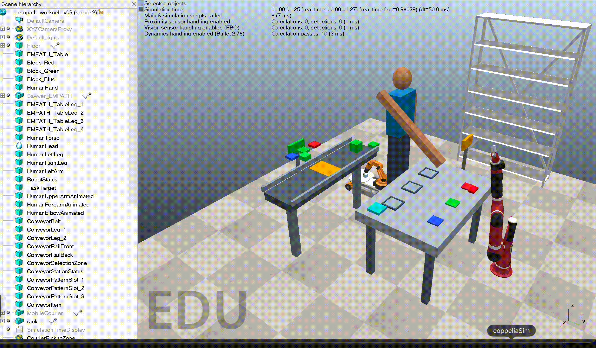

Project EMPATH: Uncertainty-Aware Human–Robot Collaboration
In Progress
A virtual human–robot collaboration environment in which a Sawyer robot observes a person performing block-selection and assembly tasks. The system estimates whether the person is likely to recover independently or need assistance, then evaluates whether to wait or intervene.